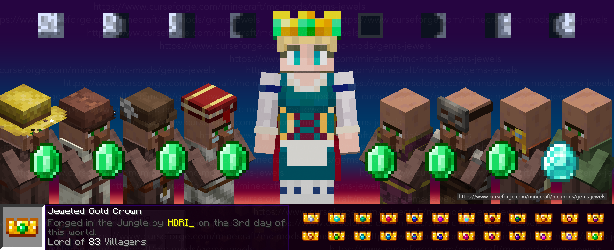
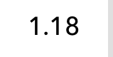
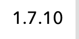
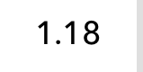
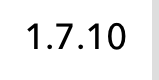
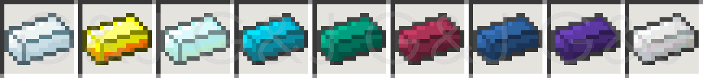

Crowns & Taxing Villagers
Gems & Blocks
Mythic Weapons
Trading With Villagers

Crowns & Treasures
 



Gems & Jewels is a mod created to capture the fun of mining for rare gems. Whether you want to use your gems for wealth or to jewel your tools and weapons, Gems & Jewels has it all.
In 1.18 each solid gem tool has a more expensive recipe but has stronger base stats.
In 1.16 each gem has a new texture to match the new look of minecraft.

Rings can be crafted to upgrade swords and other minecraft tools.

1.16.1 basic crafting recipies

Gem set swords show how many mobs they've slain

Gem set pickaxes show how many ores they've mined

Gem set tool level up with use. At level 3 they get a experience drop perk. At level 7 they get a damage resist perk. Each level grants bonus attack speed.
Gems & Jewels 1.7.10 adds 23 new minable gems and 2 new minable metals.
Gems can be crafted into rings and other jewelry that can be used to upgrade tools and armor. Tools that are upgraded show stats on their use. EX: Swords will show the number of mobs they have slain.
Major gems can be combined with iron and coal and then smelted to created gem infused steel.
Infused steel ingots can be crafted into swords. These sword grow more powerful the more mobs they slay.